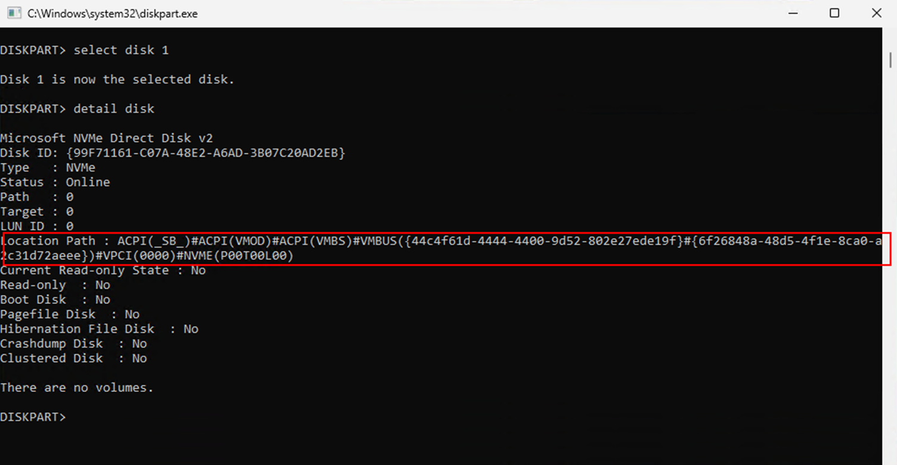
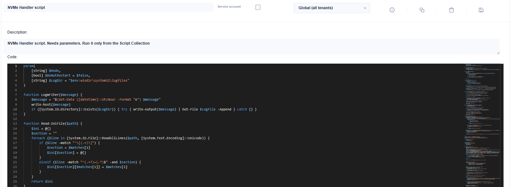

Azure Boost VMs (v6/v7): Workaround for Missing NVMe Temp Disk and Pagefile Placement - Azure Virtual Desktop

While working with newer Azure VM generations, specifically v6 and v7 Azure Boost VMs, I ran into an interesting challenge related to local NVMe storage.
Some of these VM types provide a fast, local disk on the hypervisor, which is ideal for performance-sensitive workloads such as pagefile placement. However, there is a catch.
The Problem
After deallocating and starting a VM, the secondary local NVMe disk is not automatically available inside the operating system.
Why does this happen?
- The internal disk identifier changes after each deallocate/allocate cycle
- Windows does not recognize the disk as the previously configured volume
- As a result, the disk is not mounted (e.g., no
D:drive)

👉 Important distinction:
- A normal in-guest reboot → disk remains available
- A deallocate/start cycle → disk mapping is lost
Impact
This behavior leads to a practical issue:
- The pagefile is no longer located on the fast NVMe disk
- Instead, it falls back to the OS disk (slower)
- This can negatively impact performance, especially in Azure Virtual Desktop (AVD) environments
The Workaround
To address this, I built a PowerShell-based workaround that automatically restores the expected configuration.
What the script does:
- Checks if the expected drive (D:) exists
- If not:
- Detects the available NVMe disk
- Initializes and formats it
- Assigns the correct drive letter
- Configures the pagefile to use this disk
- Triggers a Windows restart
Handling User Logins (AVD Consideration)
One key challenge was avoiding user logins during this reconfiguration phase.
To handle this, the script:
- Temporarily disables selected services
- Prevents users from logging in (e.g., AVD sessions)
- Re-enables the services after reboot and configuration
This ensures a consistent and safe state during the process.
Trade-Offs
This solution works reliably, but it comes with a downside:
- ⚠️ Longer startup time after VM allocation
- ⚠️ Don't install it on a template VM and don't capture an image from perepared VMs (imaging will fail)
The additional steps (disk detection, formatting, pagefile setup, restart) add noticeable delay to the boot process.
Important Limitation
Do not use these VMs as Golden Images after applying this workaround.
Due to the internal reboot behavior and disk handling, this can lead to broken images. I am currently investigating improvements here.
Integration with Hydra
The workaround can be integrated into automated deployment workflows using Hydra.
Step 1: Create the Script
Use the following script: https://gist.github.com/MarcelMeurer/fc4b8d14ae0a469c83cdc0511fc07607
Step 2: Create a Script Collection
Create a collection with two steps:
- Run Script
- Restart Host
Use the following parameters:
-Mode installandrun -DoNotRestart $true

Step 3: Execute
- Run the script collection (not the script directly)
- Integrate it into your rollout configuration, or
- Execute it on demand for testing
Testing and Recommendations
- Always test in a non-production environment first
- Validate:
- Disk mapping (
D:drive exists) - Pagefile placement
- Login behavior after restart
- Disk mapping (
Final Thoughts
This is clearly a workaround, not a final solution.
Ideally, Microsoft will address this behavior directly in Azure for Boost VMs with local NVMe disks. Until then, this approach ensures that:
- The pagefile is placed on the fast local disk
- Performance characteristics remain consistent
- The environment behaves predictably after redeployment
If you want to try it out, feel free to use and adapt the script—but keep the limitations in mind.